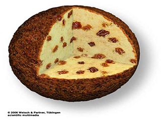
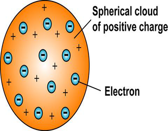
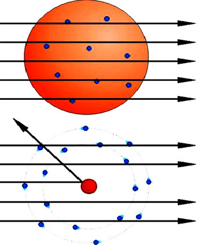

- परमाणु विद्युत उदासीन होता है क्योंकि परमाणु का धनावेश ( गोले पर उपस्थित + आवेश ) गोले में उपस्थित इलेक्ट्राॅनों के आवेश के बराबर होता है।
- परमाणु 10-10 मी. त्रिज्या का धनावेशित गोला होता है जिसमें बीच-बीच में इलेक्ट्रान इस प्रकार स्थित होते हैं जैसे तरबूज में बीज, लड्डू में इलायची के दाने।
- परमाणु का धनावेश और द्रव्यमान सम्पूर्ण गोले में एक समान रूप से वितरित होता है।

थॉमसन प्रतिरूप के दोष :
- इसकी सहायता से परमाणुओं के स्पेक्ट्रम की व्याख्या नहीं की जा सकती।
- इसकी सहायता से, कणों के प्रकीर्णन को नहीं समझाया जा सकता।

यदि plum - pudding model सही रहता तब Rutherford प्रयोग के दौरान सभी alpha कण सीधी रेखा में गए होते मगर हम जानते है की केंद्र में नाभिक की वजह से कुछ alpha कण अपने मार्ग से विचलित हो जातें हैं |